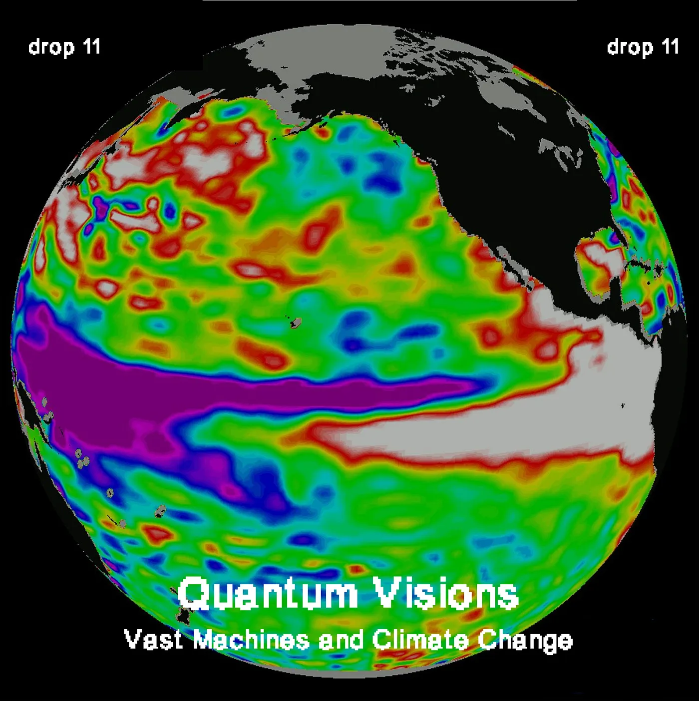
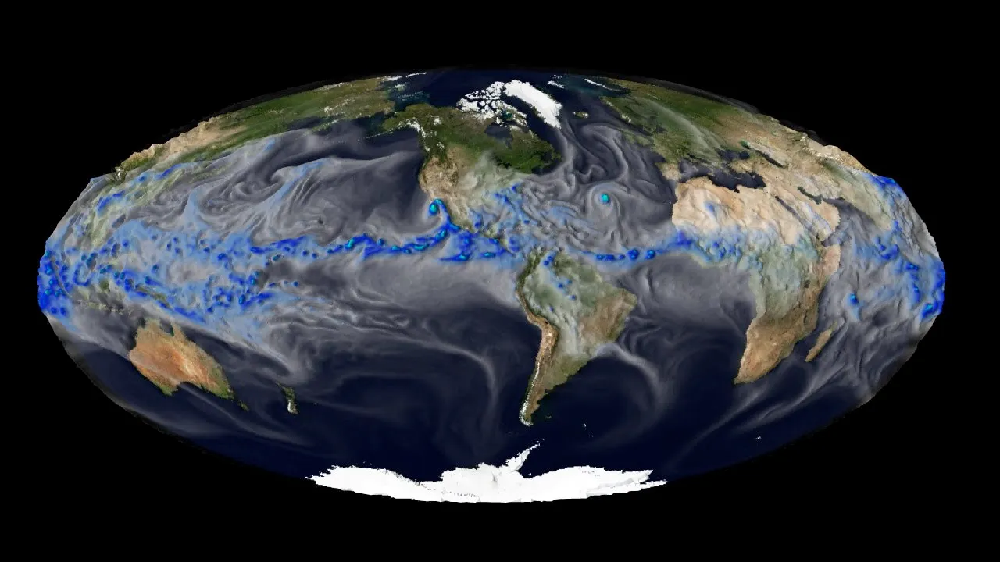
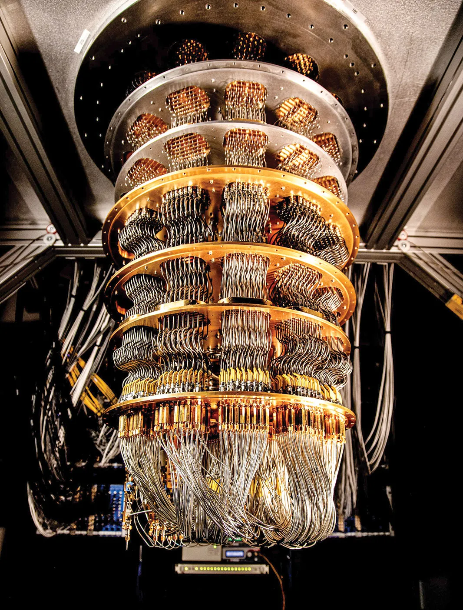

Vast Machines and Climate Change
Drop #11 · February 10, 2024 · 8 min read
Hey everyone (▰˘◡˘▰)
DROPS features a new writer, who participated in our open call: Alessandro De Frenza.
Alessandro de Frenza is a PhD student in materials science at Sorbonne Université. He specializes in experiments in large-scale facilities, DFT simulations, and other computational chemistry tools. He works on the optical activity of X-rays and he often deals with concepts of crystallography. Alessandro is interested in the dissemination of science to a larger audience. If you want to be in contact, here’s his email address.
This week’s DROP is a scanning of the entangled relationship between computational tools and climate science and speculation on the impacts of quantum computing on it. How will it affect our epistemological prospects on the warming planet? In what ways can it expand the potentialities of the tools we use to understand the Earth?

The Tech Climate Stack
Climate change and computational tools have an entangled relationship. This interplay is examined in a fantastic and often overlooked book by Paul N. Edwards: A Vast Machine: Computer Models, Climate Data, and the Politics of Global Warming. In the volume, Edwards highlights the different aspects of what may be called the Tech Climate Stack: the vast array of technologies used to collect, store, and process data on climate and the models that try to predict future events. This infrastructure is ubiquitous and it includes networks of weather stations, satellites, ocean buoys, etc, that gather data on temperature, precipitation, atmospheric composition, and other variables.
A huge challenge for scientists is to manage and integrate these data from diverse sources and to ensure its quality and accessibility for researchers. This step is crucial to create comprehensive datasets for use in climate models that can simulate and predict planetary phenomena. What are these models used for? For instance, the National Center for Atmospheric Research (NCAR) in Colorado developed the Community Earth System Model (CESM): a comprehensive Earth system model that simulates the coupled interactions between the atmosphere, ocean, land surface, and sea ice. CESM is used both to simulate future climate scenarios - usually under different greenhouse gas emissions - and to simulate past climate conditions over geological timescales, allowing scientists to study climate variability and environmental changes throughout Earth's history. Moreover, when conversations revolve around phenomena such as the El Niño-Southern Oscillation (ENSO), which impacts tropical and subtropical temperatures, we owe our ability to observe and understand them to models like CESM.
Edwards examines the process of parameterization of such models, whereby complex processes that occur at scales smaller than the model grid are represented using simplified mathematical formulas or algorithms. He discusses the trade-offs involved in model complexity, including the balance between computational efficiency and the fidelity of model simulations. International collaborations, such as the Coupled Model Intercomparison Project (CMIP), play an important role in the constant improvement of the models. Through these initiatives, national agencies coordinate together the standardized evaluation of model simulations, the sharing of model output data, and the coordination of multi-model ensemble experiments.
This planetary-scale computational infrastructure lays the ground for an epistemological revolution, an often-overlooked paradigm shift. Humanity can now observe and understand the planet and its large-scale behaviors in ways that would be impossible without these tools. The American thinker Benjamin Bratton is one of the few philosophers who focused on this mutation. For him, these models are epistemological technologies that “impact society more fundamentally, by revealing something otherwise inconceivable about how the universe works”. Like new, hyper-detailed optical lenses, the climate models are an “instrument of knowledge magnification that helps to perceive features, patterns, and correlations through vast spaces of data beyond human reach. In the history of science and technology, this is no news”, to borrow a definition from the Nooscope project.

The planetary, computational observatory is the condicio sine qua non of climate science: it’s impossible to imagine its existence without this array of infrastructure and tools. But on the horizon, a new evolution of computing promises to shake what we have described so far.
A Quantum Shake
The advent of quantum computers may represent a significant earthquake in the field of climate science, due to the leap forward in computational power that these new machines promise. But what are exactly the features of these computers that make them suitable for studying new ways of restraining climate change? And what is the impact of this kind of technology on the research?
To answer those questions, one must first start focusing on a single word, that encompasses all the future expectations: quantum.
First of all, Quantum Computing is an interdisciplinary domain encompassing computer science, physics, and mathematics. It leverages principles of quantum mechanics to tackle intricate problems at a faster pace than classical computers. But why and how do quantum computers solve problems faster than normal ones? The accelerated problem-solving capacity of quantum computers stems from their unique structure and operational methods, which hinge on two crucial principles: superposition and entanglement. These principles not only influence how information is processed but also underpin the physical architecture of quantum computers.
Before talking about those two key features, it is important to highlight that while classical computers rely on bits (sequence of 0 and 1), quantum computers work with qubits, which represent quantum particles. Superposition refers to the state of possibility accessible to qubits, with "super" denoting the multitude of potential outcomes and "position" indicating the range of possibilities. Unlike a traditional bit, which can be either 0 or 1, a qubit in a state of superposition lacks a defined value because it simultaneously holds multiple potential values. However, upon measurement, a qubit collapses to a specific value, either 0 or 1, determined by its energetic wave function at the time of measurement.
Conversely, when qubits are interconnected, we encounter the second fundamental principle of quantum computers: entanglement. Entanglement can be described as a unique connection between two or more quantum particles. It's crucial to note that these two principles are not isolated characteristics; rather, they are inherently linked. When a qubit is entangled, and thus interconnected with others, and it's in a state of superposition, each of its entangled connections also exists in a superposition state. This interplay of uncertainties exponentially amplifies the potential computational power of quantum computers, rendering them highly adept at tackling complex problems.
Another key feature of the quantum computer is its infrastructure: they look completely different from the usual aspect of normal computers and they exist in different types. Nevertheless, the most prevalent ones are superconducting quantum computers, basing their functioning on a free electron flux, without any kind of resistance connected to an energy loss.

But here comes the big challenge of quantum computing: superconductivity is not possible if not at very low temperatures, and yes, we are talking about the so-called 'critical temperature' that is barely above absolute zero. In comparison, superconductive quantum computers are actually colder than outer space.
Zooming in on the quantum processor itself, each qubit is an LC circuit, which includes a capacitor and an inductor, and this results in a resonator that researchers can then tune to behave like an atom with two quantum energy levels. In this way, they can manipulate and read the state of the qubit. This quantum processor sits at the bottom of the most visible part of a quantum computer: the chandelier, which is mainly a big refrigerator that, by mixing different types of isotopes of helium, cools the processor until almost 0 Kelvin (-373°C). To better navigate the sub-atomic realm, we suggest you play Hop, a card game designed by the University of Geneve researcher Jao Ferreira. Hop does a great job in explaining entertainingly the vast set of concepts developed by quantum physics.
Overall, the structure of quantum computers and their wide range of applications are evolving fast. Particularly, they seem to offer a new engine to the “vast machine” - the Tech Climate Stack - we describe above through Edwards and Bratton’s works.
By revolutionizing computational methods, quantum computers can become powerful new weapons in the fight against climate change. Quantum-accelerated machine learning algorithms can process vast amounts of complex data, leading to more accurate simulations and predictions of weather patterns, climate trends, and extreme events. They can sustain better Earth systems models and enable uncertainty quantification in such systemic models, improving the reliability of predictions and supporting better decision-making for climate change mitigation and adaptation strategies. Quantum-accelerated machine learning can process vast amounts of historical weather and climate data to identify patterns and relationships, leading to more accurate predictions
Nevertheless, quantum computers are a double-edged sword for climate. As is often the case with powerful computational devices, they will require an increased amount of power consumption, becoming high-energy demanding systems: for instance, in the process of cooling down the quantum processors.
So, the quantum revolution promises to overcome the intrinsic limits of computation, like the Margolus–Levitin theorem on the speed of computation, by adopting a new physical paradigm. Yet, it seems already bound to follow the path of intense resource consumption, crashing the cornucopian mentality of computer science against the material boundaries of the Earth.
The new quantum enthusiasts - both Mckinsey and Deloitte published hype-inducing reports on quantum computing applied to climate change - will address this criticism with a recursive answer: quantum computing is going to optimize itself by its computational powers, finding new efficient solutions to the dilemma of energy consumption. Quantum algorithms could optimize energy grids, vehicles’ routes, and more, solving their impact issue.
The realization of these optimistic predictions remains uncertain for now. It's crucial to acknowledge that addressing climate change requires more than just technical solutions; it necessitates profound social, political, and economic transformations. Yet, it's also essential to recognize the pivotal role that computational infrastructure plays in our understanding of climate change. Without the "vast machine," we might not even perceive the magnitude of the problem. Looking ahead, quantum perspectives may offer deeper insights, potentially entwining us further within the complexities of the challenge. Peering into the future, quantum lenses beckon, promising to unveil new vistas, perhaps ensnaring us deeper within the enigmatic tapestry of our environmental plight.